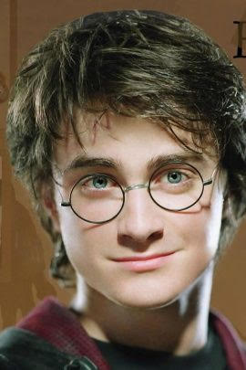
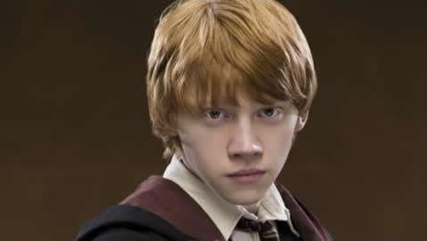
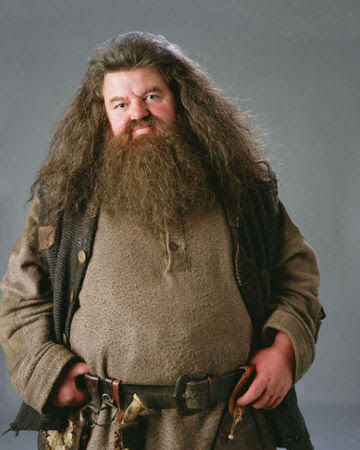
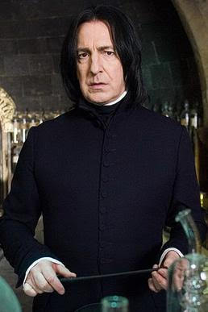
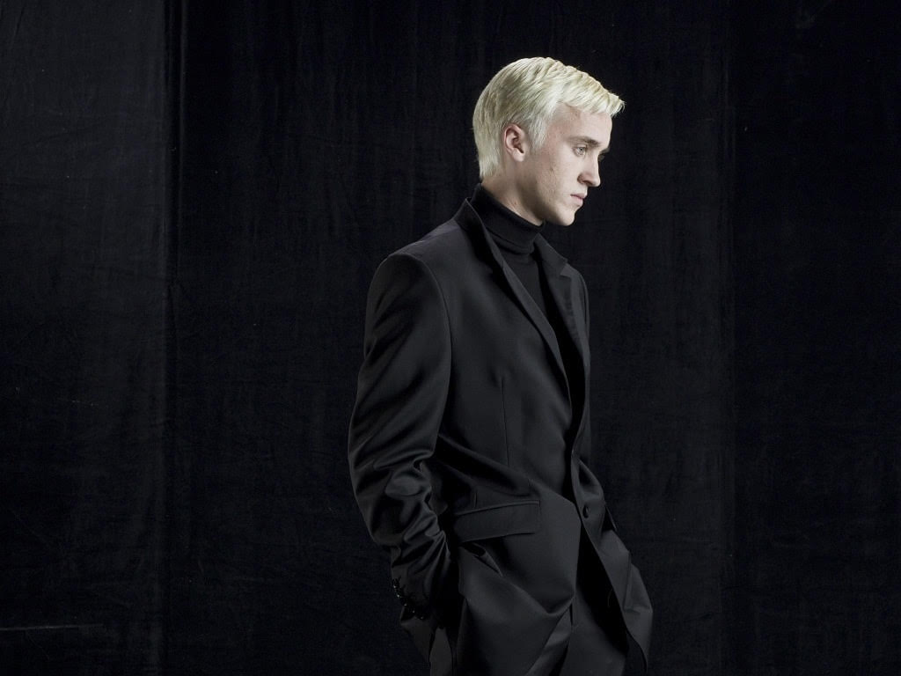
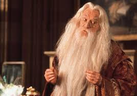

| Characters | FAQ | About Me |
|---|
|
Harry Potter. He is in the Griffyndor house. He is also on the Quidditch team(Kind of like American Football)! He loves to be with his friends, and he likes Quidditch. |
 |
|
Ron Weasley! He is also in the Gryffindor house, and he is on the Quidditch team! He loves his friends and he likes to play wizard chess. |
 |
|
Hermione Granger. She is in the Gryffindor house as well. She is very smart and knows a whole lot about Potions,spells,poisons etc. She is sometimes called an "insufferable know-it-all". |
|
| Ruberus Hagrid is a "Keeper of the keys" in Hogwarts. In the first book, he has a baby dragon named Norbert. He is quite jolly most of the time. He also has a thick accent! |  |
| Severus Snape is the Potions Professor at Hogwarts. He dislikes Harry in the beggining of the series, but sorta likes him in the end. (And guess what? He loved Harry's mom!) |  |
| Draco Malfoy is in the Slytherin house. He tries to make Harry his best friend but fails, and he goes on to despise Harry for the rest of the series. He was always casting mean jinxes on Harry. |  |
| And last but not least, Albus Dumbledore! He WAS the headmaster of Hogwarts, until he was destroyed in the the Half Blood prince. He was a very logical man, and very wise. |  |